Auxilio en Ruta
Se te pinchó una rueda, quedaste sin combustible o tuviste un desperfecto. Avisanos y vamos a buscarte donde estés.
Pedir auxilio
Traslado de vehículos, maquinaria y fletes.
Atención personalizada · Cobertura nacional
Lo que hacemos
Brindamos soluciones de traslado y asistencia en toda la Argentina, con el compromiso de llegar donde nos necesitás.
Se te pinchó una rueda, quedaste sin combustible o tuviste un desperfecto. Avisanos y vamos a buscarte donde estés.
Pedir auxilioTu auto, camioneta o utilitario trasladado de forma segura a cualquier punto del país. Cuidamos tu vehículo como si fuera el nuestro.
ConsultarTrasladamos maquinaria agrícola, industrial y cualquier tipo de carga. Llegamos a todo el territorio nacional con seguridad y puntualidad.
CotizarKilómetros recorridos
Clientes atendidos
Provincias cubiertas
Años de experiencia
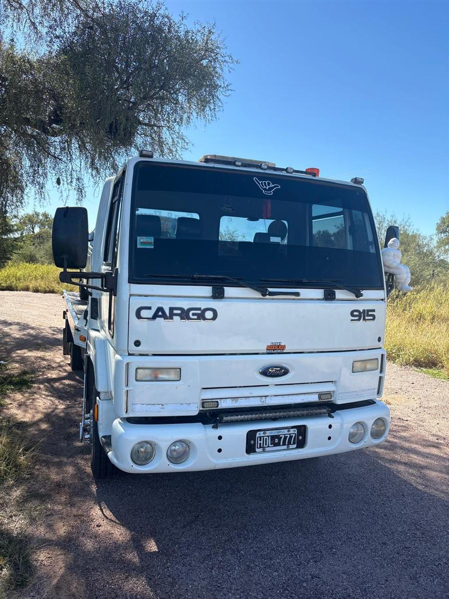
Quiénes somos
Me llamo Esteban Bornancini, pero todos me dicen el Teby. Este servicio lo manejo yo, con mi camión y con las ganas de hacer las cosas como corresponde. Acá no vas a encontrar una empresa enorme ni choferes que cambian todo el tiempo: vas a encontrarme a mí, poniéndole el hombro a cada viaje.
Cuando me llamás, sabés perfectamente con quién estás hablando. Te aviso por dónde voy, cuido lo tuyo como si fuera mío y cumplo lo que prometo. Para mí no sos un número: sos un vecino, un productor, alguien que confió en mí para sacarlo de un apuro. Y esa confianza la cuido como oro.
Salgo desde Jesús María, Córdoba, hacia cualquier rincón del país y a la hora que haga falta. Con más de 5 años arriba del camión aprendí algo simple: lo que más vale no es el tamaño del que te ayuda, sino que del otro lado haya alguien de confianza. Ese alguien soy yo.
El equipo
Un camión preparado para la ruta y las largas distancias, listo para trasladar tu vehículo o maquinaria con seguridad desde Jesús María, Córdoba, hacia cualquier punto del país.
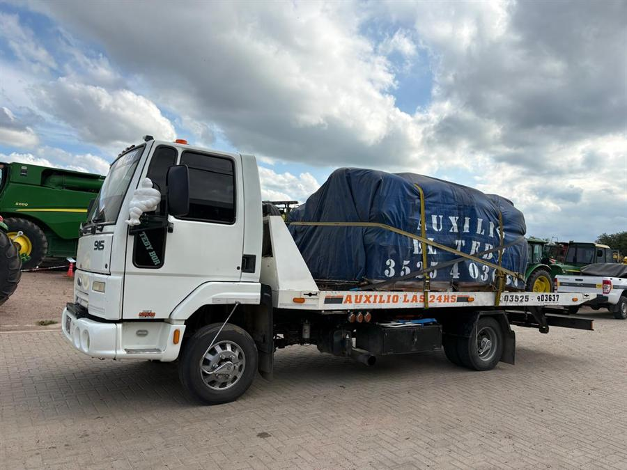
Mantenido al día y siempre en condiciones, es la herramienta con la que cumplo en cada viaje: preparado para la exigencia de la ruta y para llegar lejos, con el respaldo de una atención personalizada en la que siempre hablás con la misma persona.
Desde Jesús María hacia toda la Argentina.
Los 7 días, a cualquier hora.
Preparado para distintos tipos de carga.
Sin intermediarios: hablás conmigo.
Ficha técnica
Conocé de antemano qué podemos trasladar: estas son las medidas reales de la plancha y el peso máximo que soporta el camión.
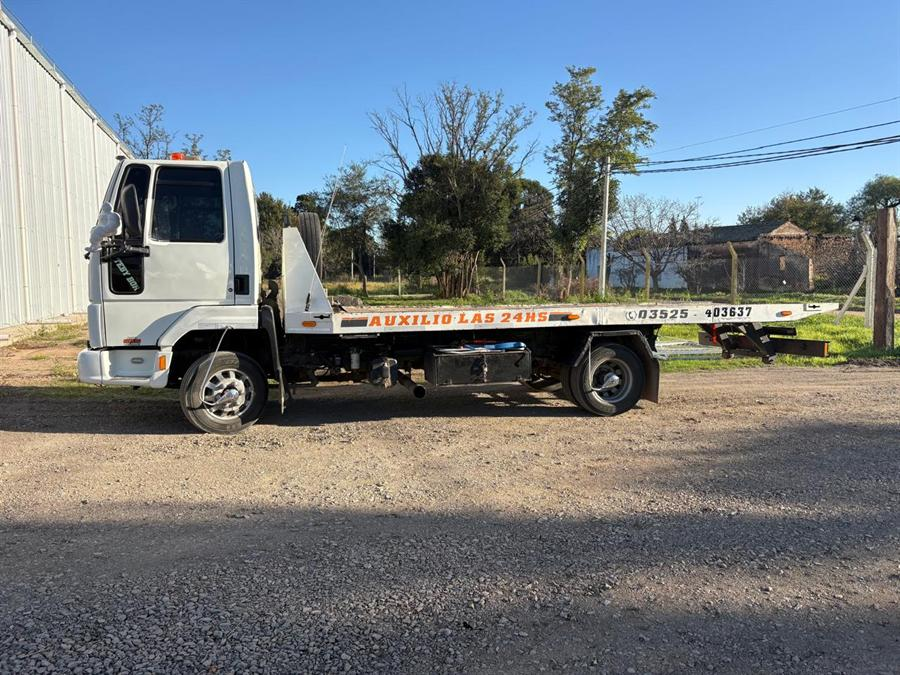
Aseguramos cada vehículo o equipo según su tamaño y peso, para un traslado firme y sin riesgos.
Alcance geográfico
No importa en qué ruta te quedaste ni adónde necesitás llegar. Hacemos traslado de vehículos desde Córdoba hacia cualquier punto de la Argentina, desde Jujuy hasta Tierra del Fuego.
Coordinamos el servicio de forma directa, sin intermediarios, para que tu vehículo o maquinaria llegue a destino de la manera más rápida y segura posible.
Operamos desde Jesús María y Córdoba Capital, con salida hacia todo el país.
Experiencia en todas las rutas nacionales y provinciales de Argentina.
Coordinamos el viaje en minutos. Llegamos cuanto antes a tu ubicación.
Evidencia de nuestro trabajo
Estas son algunas de las cargas, maquinarias y vehículos que trasladamos. Cada trabajo es una historia de confianza depositada en nosotros.
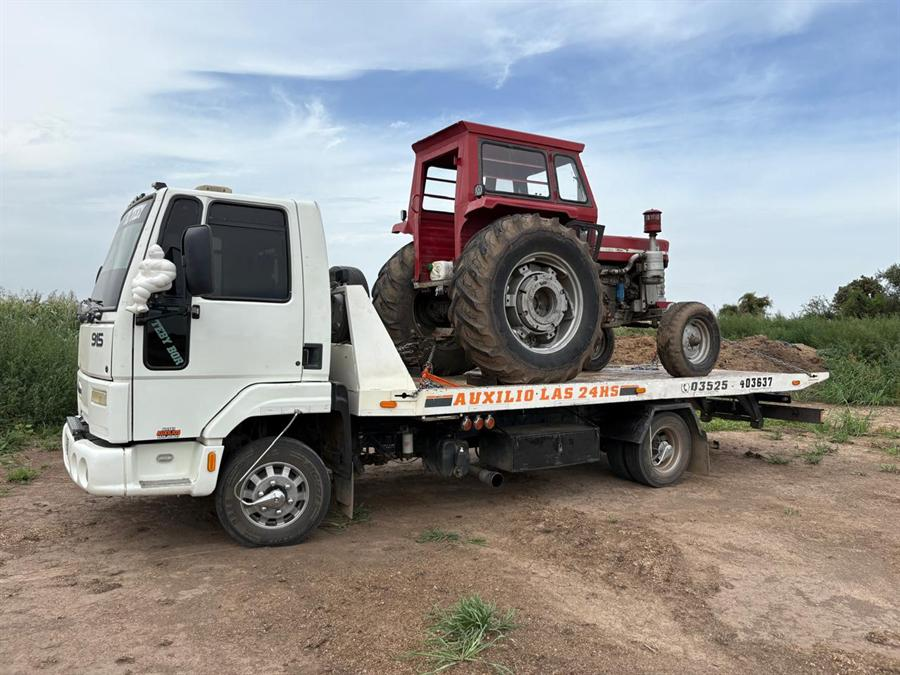
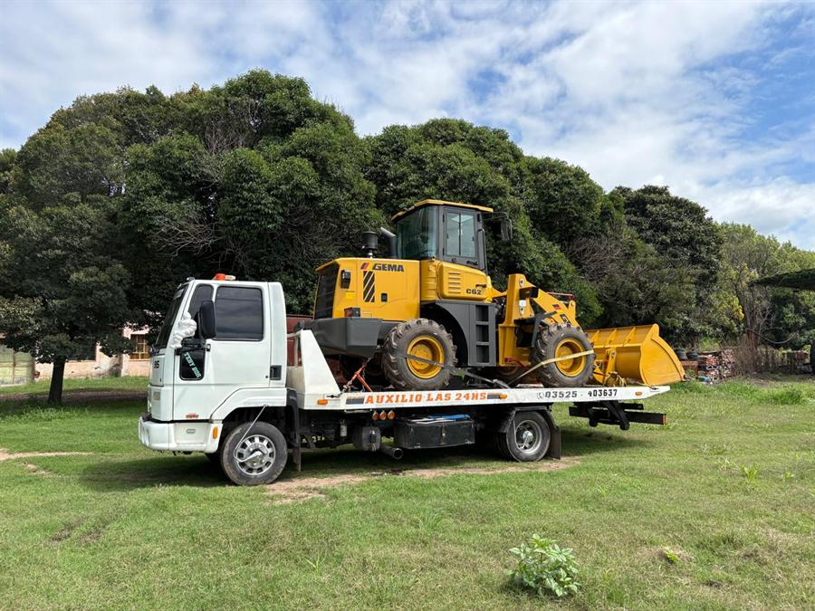
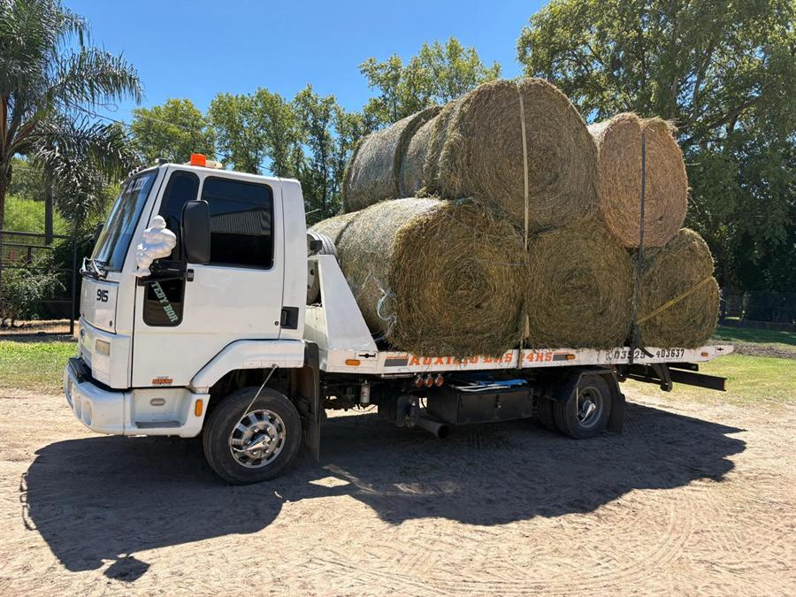
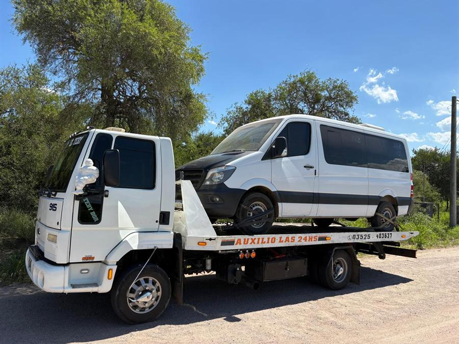
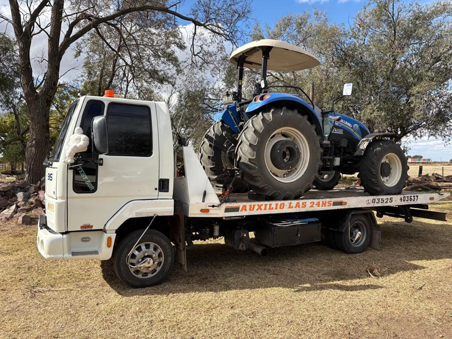
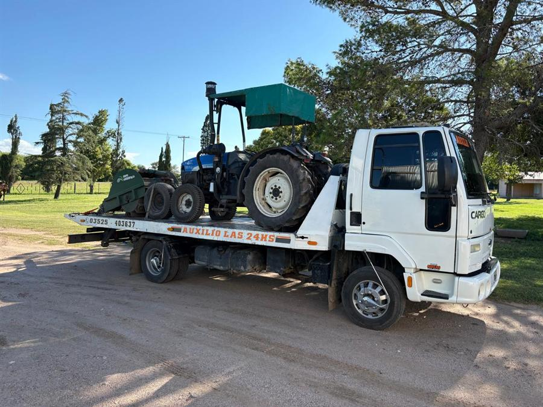
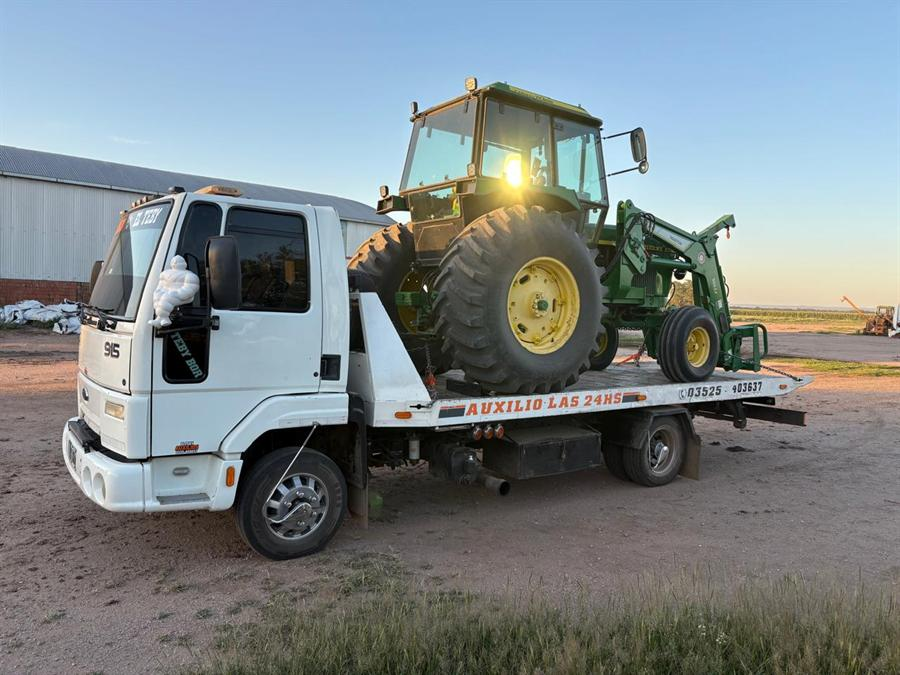
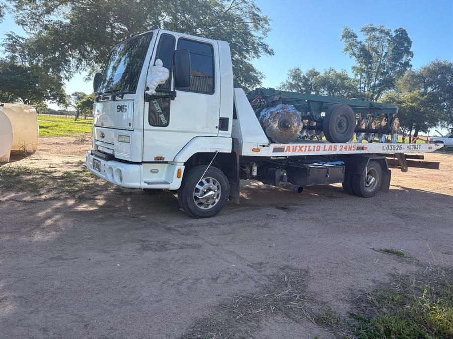
Cómo trabajamos
Sin formularios complicados ni largos tiempos de espera. Así es como coordinamos tu servicio:
Contactanos por WhatsApp o llamada al +54 9 3525 40-3637. Te atendemos directamente, sin centralita ni esperas.
Hablamos, entendemos lo que necesitás y acordamos la mejor forma de hacer el traslado o auxilio.
Partimos con el camión hacia tu ubicación. Te mantenemos informado durante todo el trayecto.
Tu vehículo, carga o maquinaria llega seguro. Trabajo hecho, cliente satisfecho.
Lo que dicen nuestros clientes
"Me quedé varado en la ruta 9 a las 3 de la mañana. Lo llamé al Teby y en dos horas estaba ahí. Salvavidas total. Lo recomiendo con los ojos cerrados."
"Necesitaba trasladar una cosechadora desde Córdoba a La Pampa. El Teby se encargó de todo. Llegó en perfecto estado y en el tiempo acordado. Excelente."
"Lo que más valoro es el trato. Hablás con él directamente, te explica todo, cumple lo que promete. Muy diferente a otras empresas. El servicio es de primera."
Estamos para ayudarte
Completá el formulario o escribinos directamente por WhatsApp. Te respondemos a la brevedad.
No pierdas tiempo. Llamanos o escribinos y salimos enseguida.